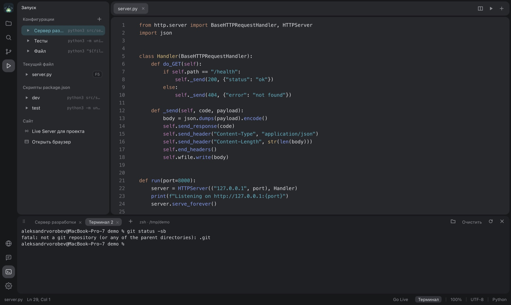

Стеклянное окно
В режиме Liquid Glass панели становятся стеклянными, а на macOS окно полупрозрачно целиком: сквозь него виден рабочий стол. На Windows и Linux окно остаётся непрозрачным и берёт цвета темы.
 FrogeeCodeIDE
FrogeeCodeIDE
Подключите Ollama, LM Studio или свой провайдер. Чат видит ваши файлы, предлагает правки, а вы принимаете или откатываете их одной кнопкой.
СкачатьДругие платформы, все релизы или исходный код на GitHub

Ответ модели не затирает файл. Изменения подсвечиваются в самом редакторе, и вы решаете, что оставить.

Открывайте .ipynb и запускайте ячейки. Редактор сам находит виртуальные окружения проекта и предлагает выбрать ядро.

Сохраните команду один раз и запускайте кнопкой. Каждая конфигурация открывается в своей вкладке терминала.

Открывает обычные файлы и папки, без облака и своего формата проекта.
В режиме Liquid Glass панели становятся стеклянными, а на macOS окно полупрозрачно целиком: сквозь него виден рабочий стол. На Windows и Linux окно остаётся непрозрачным и берёт цвета темы.
Светлые и тёмные темы, свои темы в JSON. Формат описан в документации.
Python, JavaScript, HTML, CSS, JSON, Markdown и другие.
// прямо в редакторе const ok = await run(file);
Совпадения подсвечиваются, не отнимая фокус у поля ввода. Отдельно есть поиск по проекту.
Страница обновляется при сохранении файла. Браузер открывается рядом с кодом.
Файлы перетаскиваются между папками, изменения из других программ подхватываются сами. Есть предпросмотр Markdown, просмотр изображений, диагностика и список TODO.
Локальная модель держит код на вашей машине. Если нужна мощнее, подключается провайдер с вашим ключом.
Серое продолжение по Tab. Для FIM-моделей учитывается код после курсора.
Прикрепляйте файлы к сообщению, редактируйте и перегенерируйте ответы.
Несколько чатов с историей, код из ответа применяется одной кнопкой.
С локальной моделью всё работает без интернета.
Бесплатно. Сборки лежат на странице релизов GitHub.